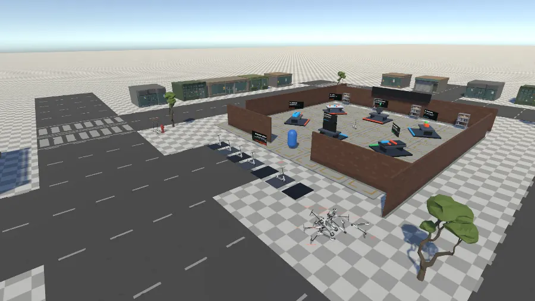

六個工作站
清洗、平衡、安裝、拆解、上漆與試駕等工作站，各將一次維修轉為簡短的鍵盤與滑鼠任務。
顧客滑板車從城市的四個入口駛入，並停在接待線旁。拿起一台，搬進車庫。
每台滑板車都有一到兩項工作的維修卡。走到對應工作站，完成簡短的實作任務。
最後完成的工作會發放報酬，滑板車隨後可以搬出車庫。HUD 會顯示日期、金錢與聲望。
清洗、平衡、安裝、拆解、上漆與試駕等工作站，各將一次維修轉為簡短的鍵盤與滑鼠任務。
顧客滑板車從四個入口駛入接待線，接待線滿時會有更多滑板車堆積。
可以用 E 撿起並搬運滑板車，或騎乘：Q 上車，A 與 D 轉向，Space 踢地，S 煞車。
每台滑板車都帶有一到兩步的維修卡，工作站只接受卡片要求的步驟。
一天的工作坊時間為現實中的十分鐘。進度會存入存檔欄位，每兩天自動存檔一次。
主選單與選項提供十種語言、難度，以及分開的音樂與音效音量。
目前尚無發售日期。這些是專案目標，並非承諾。
來自 Unity 專案的擷取畫面。



第一人稱維修店遊戲。你把客戶的滑板車推進車庫，在六個工作站完成簡短的實作任務，完成工作即可獲得報酬。WillowinWorlds 與 Render Software Studio 合作開發。
這是 PC 原型，使用鍵盤與滑鼠操作。目前尚無公開版本、商店頁面或發售日期。
Scooter Mechanic Simulator 由 WillowinWorlds 與 Render Software Studio 合作製作。WillowinWorlds 是獨立遊戲工作室；請參閱其 主要遊戲。請在本頁連結的社群頻道關注 WillowinWorlds，或寄信至 willowinworlds@gmail.com 想獲取 Scooter Mechanic Simulator 的最新消息。
投票將在工作室的頻道開放。請關注 WillowinWorlds 參與其中。